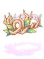

Achievements
Jump to navigation
Jump to search

You can get achievements by doing various tasks ingame. Once you've completed an achievement, find it by opening the achievement window (Alt-X) and click on "Claim Reward". Achievements are account-bound, that means you can get all of them for all of your characters. You can also see the all the available achievements and your progress in the website.
Titles
Speaking
| Title | Required Achievement | Condition |
|---|---|---|
| Prontera Visitor | Prontera Regular | Speak 150 times in Prontera. |
| Prontera Denizen | Prontera Regular | Speak 300 times in Prontera. |
| Prontera Citizen | Prontera Regular | Speak 600 times in Prontera. |
| Prontera Celebrity | Prontera Regular | Speak 1200 times in Prontera. |
| Prontera Princess | Prontera Regular | Speak 2400 times in Prontera. |
| Geffen Visitor | Geffen Regular | Speak 150 times in Geffen. |
| Geffen Denizen | Geffen Regular | Speak 300 times in Geffen. |
| Geffen Citizen | Geffen Regular | Speak 600 times in Geffen. |
| Geffen Celebrity | Geffen Regular | Speak 1200 times in Geffen. |
| Geffen Arch-Mage | Geffen Regular | Speak 2400 times in Geffen. |
| Morroc Visitor | Morroc Regular | Speak 150 times in Morroc. |
| Morroc Denizen | Morroc Regular | Speak 300 times in Morroc. |
| Morroc Citizen | Morroc Regular | Speak 600 times in Morroc. |
| Morroc Celebrity | Morroc Regular | Speak 1200 times in Morroc. |
| Morroc Sultan | Morocc Regular | Speak 2400 times in Morroc. |
| Payon Visitor | Payon Regular | Speak 150 times in Payon. |
| Payon Denizen | Payon Regular | Speak 300 times in Payon. |
| Payon Citizen | Payon Regular | Speak 600 times in Payon. |
| Payon Celebrity | Payon Regular | Speak 1200 times in Payon. |
| Payon Elder | Payon Regular | Speak 2400 times in Payon. |
| Yuno Visitor | Yuno Regular | Speak 150 times in Yuno. |
| Yuno Denizen | Yuno Regular | Speak 300 times in Yuno. |
| Yuno Citizen | Yuno Regular | Speak 600 times in Yuno. |
| Yuno Celebrity | Yuno Regular | Speak 1200 times in Yuno. |
| Yuno Scholar | Yuno Regular | Speak 2400 times in Yuno. |
| Lighthalzen Visitor | Lighthalzen Regular | Speak 150 times in Lighthalzen. |
| Lighthalzen Denizen | Lighthalzen Regular | Speak 300 times in Lighthalzen. |
| Lighthalzen Citizen | Lighthalzen Regular | Speak 600 times in Lighthalzen. |
| Lighthalzen Celebrity | Lighthalzen Regular | Speak 1200 times in Lighthalzen. |
| Lighthalzen Bio-Engineer | Lighthalzen Regular | Speak 2400 times in Lighthalzen. |
| Einbroch Visitor | Einbroch Regular | Speak 150 times in Einbroch. |
| Einbroch Denizen | Einbroch Regular | Speak 300 times in Einbroch. |
| Einbroch Citizen | Einbroch Regular | Speak 600 times in Einbroch. |
| Einbroch Celebrity | Einbroch Regular | Speak 1200 times in Einbroch. |
| Einbroch Director | Einbroch Regular | Speak 2400 times in Einbroch. |
| Rachel Visitor | Rachel Regular | Speak 150 times in Rachel. |
| Rachel Denizen | Rachel Regular | Speak 300 times in Rachel. |
| Rachel Citizen | Rachel Regular | Speak 600 times in Rachel. |
| Rachel Celebrity | Rachel Regular | Speak 1200 times in Rachel. |
| Rachel Bishop | Rachel Regular | Speak 2400 times in Rachel. |
| Alberta Visitor | Alberta Regular | Speak 150 times in Alberta. |
| Alberta Denizen | Alberta Regular | Speak 300 times in Alberta. |
| Alberta Citizen | Alberta Regular | Speak 600 times in Alberta. |
| Alberta Celebrity | Alberta Regular | Speak 1200 times in Alberta. |
| Alberta Captain | Alberta Regular | Speak 2400 times in Alberta. |
MVP Hunting
| Title | Required Achievement | Condition |
|---|---|---|
| Osiris Killer | Osiris | Defeat Osiris inside the Pyramid F4 |
| Osiris Slayer | Osiris | Defeat Osiris inside the Pyramid F4 |
| Osiris Executioner | Osiris | Defeat Osiris inside the Pyramid F4 |
| Osiris Slaughterer | Osiris [Expert] | Defeat Osiris inside the Pyramid F4 |
| Baphomet Killer | Baphomet | Defeat Baphomet inside the Hidden Maze |
| Baphomet Slayer | Baphomet | Defeat Baphomet inside the Hidden Maze |
| Baphomet Executioner | Baphomet | Defeat Baphomet inside the Hidden Maze |
| Baphomet Slaughterer | Baphomet [Expert] | Defeat Baphomet inside the Hidden Maze |
| Doppelganger Killer | Defeat Doppelganger | Defeat Doppelganger inside the Geffen Dungeon |
| Doppelganger Slayer | Doppelganger | Defeat Doppelganger inside the Geffen Dungeon |
| Doppelganger Executioner | Defeat Doppelganger | Defeat Doppelganger inside the Geffen Dungeon |
| Doppelganger Slaughterer | Doppelganger [Expert] | Defeat Doppelganger inside the Geffen Dungeon |
| Mistress Killer | Defeat Mistress | Defeat Mistress inside the Mt. Mjolnir |
| Mistress Slayer | Mistress | Defeat Mistress inside the Mt. Mjolnir |
| Mistress Executioner | Defeat Mistress | Defeat Mistress inside the Mt. Mjolnir |
| Mistress Slaughterer | Mistress [Expert] | Defeat Mistress inside the Mt. Mjolnir |
| Golden Thief Bug Killer | Defeat Golden Thief Bug | Defeat Golden Thief Bug inside the Prontera Sewer |
| Golden Thief Bug Slayer | Golden Thief Bug | Defeat Golden Thief Bug inside the Prontera Sewer |
| Golden Thief Bug Executioner | Defeat Golden Thief Bug | Defeat Golden Thief Bug inside the Prontera Sewer |
| Golden Thief Bug Slaughterer | Golden Thief Bug [Expert] | Defeat Golden Thief Bug inside the Prontera Sewer |
| Orc Hero Killer | Defeat Orc Hero | Defeat Orc Hero inside the Geffen Field |
| Orc Hero Slayer | Orc Hero | Defeat Orc Hero inside the Geffen Field |
| Orc Hero Executioner | Defeat Orc Hero | Defeat Orc Hero inside the Geffen Field |
| Orc Hero Slaughterer | Orc Hero [Expert] | Defeat Orc Hero inside the Geffen Field |
| Drake Killer | Defeat Drake | Defeat Drake inside the Sunken Ship |
| Drake Slayer | Drake | Defeat Drake inside the Sunken Ship |
| Drake Executioner | Defeat Drake | Defeat Drake inside the Sunken Ship |
| Drake Slaughterer | Drake [Expert] | Defeat Drake inside the Sunken Ship |
| Eddga Killer | Defeat Eddga | Defeat Eddga inside the Payon Forest |
| Eddga Slayer | Eddga | Defeat Eddga inside the Payon Forest |
| Eddga Executioner | Defeat Eddga | Defeat Eddga inside the Payon Forest |
| Eddga Slaughterer | Eddga [Expert] | Defeat Eddga inside the Payon Forest |
| Maya Killer | Defeat Maya | Defeat Maya inside the Ant Hell Dungeon |
| Maya Slayer | Maya | Defeat Maya inside the Ant Hell Dungeon |
| Maya Executioner | Defeat Maya | Defeat Maya inside the Ant Hell Dungeon |
| Maya Slaughterer | Maya [Expert] | Defeat Maya inside the Ant Hell Dungeon |
| Moonlight Flower Killer | Defeat Moonlight Flower | Defeat Moonlight Flower inside the Payon Dungeon |
| Moonlight Flower Slayer | Moonlight Flower | Defeat Moonlight Flower inside the Payon Dungeon |
| Moonlight Flower Executioner | Defeat Moonlight Flower | Defeat Moonlight Flower inside the Payon Dungeon |
| Moonlight Flower Slaughterer | Moonlight Flower [Expert] | Defeat Moonlight Flower inside the Payon Dungeon |
| Pharaoh Killer | Defeat Pharaoh | Defeat Pharaoh inside the Sphinx Dungeon |
| Pharaoh Slayer | Pharaoh | Defeat Pharaoh inside the Sphinx Dungeon |
| Pharaoh Executioner | Defeat Pharaoh | Defeat Pharaoh inside the Sphinx Dungeon |
| Pharaoh Slaughterer | Pharaoh [Expert] | Defeat Pharaoh inside the Sphinx Dungeon |
| Phreeoni Killer | Defeat Phreeoni | Defeat Phreeoni inside the Sograt Desert |
| Phreeoni Slayer | Phreeoni | Defeat Phreeoni inside the Sograt Desert |
| Phreeoni Executioner | Defeat Phreeoni | Defeat Phreeoni inside the Sograt Desert |
| Phreeoni Slaughterer | Phreeoni [Expert] | Defeat Phreeoni inside the Sograt Desert |
| Orc Lord Killer | Defeat Orc Lord | Defeat Orc Lord inside the Geffen field |
| Orc Lord Slayer | Orc Lord | Defeat Orc Lord inside the Geffen field |
| Orc Lord Executioner | Defeat Orc Lord | Defeat Orc Lord inside the Geffen field |
| Orc Lord Slaughterer | Orc Lord [Expert] | Defeat Orc Lord inside the Geffen field |
| Knight of Windstorm Killer | Defeat Knight of Windstorm | Defeat Knight of Windstorm inside the Toy Factory |
| Knight of Windstorm Slayer | Knight of Windstorm | Defeat Knight of Windstorm inside the Toy Factory |
| Knight of Windstorm Executioner | Defeat Knight of Windstorm | Defeat Knight of Windstorm inside the Toy Factory |
| Knight of Windstorm Slaughterer | Knight of Windstorm [Expert] | Defeat Knight of Windstorm inside the Toy Factory |
| Garm Killer | Defeat Garm | Defeat Garm inside the Lutie field |
| Garm Slayer | Garm | Defeat Garm inside the Lutie field |
| Garm Executioner | Defeat Garm | Defeat Garm inside the Lutie field |
| Garm Slaughterer | Garm [Expert] | Defeat Garm inside the Lutie field |
| Dark Lord Killer | Defeat Dark Lord | Defeat Dark Lord inside the Glast Heim Churchyard |
| Dark Lord Slayer | Dark Lord | Defeat Dark Lord inside the Glast Heim Churchyard |
| Dark Lord Executioner | Defeat Dark Lord | Defeat Dark Lord inside the Glast Heim Churchyard |
| Dark Lord Slaughterer | Dark Lord [Expert] | Defeat Dark Lord inside the Glast Heim Churchyard |
| Turtle General Killer | Defeat Turtle General | Defeat Turtle General inside the Turtle Dungeon |
| Turtle General Slayer | Turtle General | Defeat Turtle General inside the Turtle Dungeon |
| Turtle General Executioner | Defeat Turtle General | Defeat Turtle General inside the Turtle Dungeon |
| Turtle General Slaughterer | Turtle General [Expert] | Defeat Turtle General inside the Turtle Dungeon |
| Lord of Death Killer | Defeat Lord of Death | Defeat Lord of Death inside Niflheim |
| Lord of Death Slayer | Lord of Death | Defeat Lord of Death inside Niflheim |
| Lord of Death Executioner | Defeat Lord of Death | Defeat Lord of Death inside Niflheim |
| Lord of Death Slaughterer | Lord of Death [Expert] | Defeat Lord of Death inside Niflheim |
| Dracula Killer | Defeat Dracula | Defeat Dracula inside the Geffen Dungeon |
| Dracula Slayer | Dracula | Defeat Dracula inside the Geffen Dungeon |
| Dracula Executioner | Defeat Dracula | Defeat Dracula inside the Geffen Dungeon |
| Dracula Slaughterer | Dracula [Expert] | Defeat Dracula inside the Geffen Dungeon |
| Evil Snake Lord Killer | Defeat Evil Snake Lord | Defeat Evil Snake Lord inside the Gonryun Dungeon |
| Evil Snake Lord Slayer | Evil Snake Lord | Defeat Evil Snake Lord inside the Gonryun Dungeon |
| Evil Snake Lord Executioner | Defeat Evil Snake Lord | Defeat Evil Snake Lord inside the Gonryun Dungeon |
| Evil Snake Lord Slaughterer | Evil Snake Lord [Expert] | Defeat Evil Snake Lord inside the Gonryun Dungeon |
| Incantation Samurai Killer | Defeat Incantation Samurai | Defeat Incantation Samurai inside the Amatsu Dungeon |
| Incantation Samurai Slayer | Incantation Samurai | Defeat Incantation Samurai inside the Amatsu Dungeon |
| Incantation Samurai Executioner | Defeat Incantation Samurai | Defeat Incantation Samurai inside the Amatsu Dungeon |
| Incantation Samurai Slaughterer | Incantation Samurai [Expert] | Defeat Incantation Samurai inside the Amatsu Dungeon |
| Amon Ra Killer | Defeat Amon Ra | Defeat Amon Ra inside the Pyramid B2 |
| Amon Ra Slayer | Amon Ra | Defeat Amon Ra inside the Pyramid B2 |
| Amon Ra Executioner | Defeat Amon Ra | Defeat Amon Ra inside the Pyramid B2 |
| Amon Ra Slaughterer | Amon Ra [Expert] | Defeat Amon Ra inside the Pyramid B2 |
| Tao Gunka Killer | Defeat Tao Gunka | Defeat Tao Gunka inside the West Cave Karu |
| Tao Gunka Slayer | Tao Gunka | Defeat Tao Gunka inside the West Cave Karu |
| Tao Gunka Executioner | Defeat Tao Gunka | Defeat Tao Gunka inside the West Cave Karu |
| Tao Gunka Slaughterer | Tao Gunka [Expert] | Defeat Tao Gunka inside the West Cave Karu |
| RSX 0806 Killer | Defeat RSX 0806 | Defeat RSX 0806 inside the Mine Dungeon |
| RSX 0806 Slayer | RSX 0806 | Defeat RSX 0806 inside the Mine Dungeon |
| RSX 0806 Executioner | Defeat RSX 0806 | Defeat RSX 0806 inside the Mine Dungeon |
| RSX 0806 Slaughterer | RSX 0806 [Expert] | Defeat RSX 0806 inside the Mine Dungeon |
| Bacsojin Killer | Defeat Bacsojin | Defeat Bacsojin inside the Louyang Dungeon |
| Bacsojin Slayer | Bacsojin | Defeat Bacsojin inside the Louyang Dungeon |
| Bacsojin Executioner | Defeat Bacsojin | Defeat Bacsojin inside the Louyang Dungeon |
| Bacsojin Slaughterer | Bacsojin [Expert] | Defeat Bacsojin inside the Louyang Dungeon |
| Lord Knight Seyren Killer | Defeat Lord Knight Seyren | Defeat Lord Knight Seyren inside the Biolab Dungeon F3 |
| Lord Knight Seyren Slayer | Lord Knight Seyren | Defeat Lord Knight Seyren inside the Biolab Dungeon F3 |
| Lord Knight Seyren Executioner | Defeat Lord Knight Seyren | Defeat Lord Knight Seyren inside the Biolab Dungeon F3 |
| Lord Knight Seyren Slaughterer | Lord Knight Seyren [Expert] | Defeat Lord Knight Seyren inside the Biolab Dungeon F3 |
| Assassin Cross Eremes Killer | Defeat Assassin Cross Eremes | Defeat Assassin Cross Eremes inside the Biolab Dungeon F3 |
| Assassin Cross Eremes Slayer | Assassin Cross Eremes | Defeat Assassin Cross Eremes inside the Biolab Dungeon F3 |
| Assassin Cross Eremes Executioner | Defeat Assassin Cross Eremes | Defeat Assassin Cross Eremes inside the Biolab Dungeon F3 |
| Assassin Cross Eremes Slaughterer | Assassin Cross Eremes [Expert] | Defeat Assassin Cross Eremes inside the Biolab Dungeon F3 |
| Whitesmith Harword Killer | Defeat Whitesmith Harword | Defeat Whitesmith Harword inside the Biolab Dungeon F3 |
| Whitesmith Harword Slayer | Whitesmith Harword | Defeat Whitesmith Harword inside the Biolab Dungeon F3 |
| Whitesmith Harword Executioner | Defeat Whitesmith Harword | Defeat Whitesmith Harword inside the Biolab Dungeon F3 |
| Whitesmith Harword Slaughterer | Whitesmith Harword [Expert] | Defeat Whitesmith Harword inside the Biolab Dungeon F3 |
| High Priest Magaleta Killer | Defeat High Priest Magaleta | Defeat High Priest Magaleta inside the Biolab Dungeon F3 |
| High Priest Magaleta Slayer | High Priest Magaleta | Defeat High Priest Magaleta inside the Biolab Dungeon F3 |
| High Priest Magaleta Executioner | Defeat High Priest Magaleta | Defeat High Priest Magaleta inside the Biolab Dungeon F3 |
| High Priest Magaleta Slaughterer | High Priest Magaleta [Expert] | Defeat High Priest Magaleta inside the Biolab Dungeon F3 |
| Sniper Shecil Killer | Defeat Sniper Shecil | Defeat Sniper Shecil inside the Biolab Dungeon F3 |
| Sniper Shecil Slayer | Sniper Shecil | Defeat Sniper Shecil inside the Biolab Dungeon F3 |
| Sniper Shecil Executioner | Defeat Sniper Shecil | Defeat Sniper Shecil inside the Biolab Dungeon F3 |
| Sniper Shecil Slaughterer | Sniper Shecil [Expert] | Defeat Sniper Shecil inside the Biolab Dungeon F3 |
| High Wizard Katrinn Killer | Defeat High Wizard Katrinn | Defeat High Wizard Katrinn inside the Biolab Dungeon F3 |
| High Wizard Katrinn Slayer | High Wizard Katrinn | Defeat High Wizard Katrinn inside the Biolab Dungeon F3 |
| High Wizard Katrinn Executioner | Defeat High Wizard Katrinn | Defeat High Wizard Katrinn inside the Biolab Dungeon F3 |
| High Wizard Katrinn Slaughterer | High Wizard Katrinn [Expert] | Defeat High Wizard Katrinn inside the Biolab Dungeon F3 |
| Ygnizem Killer | Defeat Ygnizem | Defeat Ygnizem inside the Biolab Dungeon F2 |
| Ygnizem Slayer | Ygnizem | Defeat Ygnizem inside the Biolab Dungeon F2 |
| Ygnizem Executioner | Defeat Ygnizem | Defeat Ygnizem inside the Biolab Dungeon F2 |
| Ygnizem Slaughterer | Ygnizem [Expert] | Defeat Ygnizem inside the Biolab Dungeon F2 |
| Vesper Killer | Defeat Vesper | Defeat Vesper inside the Center of Juperos |
| Vesper Slayer | Vesper | Defeat Vesper inside the Center of Juperos |
| Vesper Executioner | Defeat Vesper | Defeat Vesper inside the Center of Juperos |
| Vesper Slaughterer | Vesper [Expert] | Defeat Vesper inside the Center of Juperos |
| Lady Tanee Killer | Defeat Lady Tanee | Defeat Lady Tanee inside the Ancient Shrine |
| Lady Tanee Slayer | Lady Tanee | Defeat Lady Tanee inside the Ancient Shrine |
| Lady Tanee Executioner | Defeat Lady Tanee | Defeat Lady Tanee inside the Ancient Shrine |
| Lady Tanee Slaughterer | Lady Tanee [Expert] | Defeat Lady Tanee inside the Ancient Shrine |
| Thanatos Killer | Defeat Thanatos | Defeat Thanatos inside the Thanatos Tower |
| Thanatos Slayer | Thanatos | Defeat Thanatos inside the Thanatos Tower |
| Thanatos Executioner | Defeat Thanatos | Defeat Thanatos inside the Thanatos Tower |
| Thanatos Slaughterer | Thanatos [Expert] | Defeat Thanatos inside the Thanatos Tower |
| Detale Killer | Defeat Detale | Defeat Detale inside the Abyss Lake Underground Cave |
| Detale Slayer | Detale | Defeat Detale inside the Abyss Lake Underground Cave |
| Detale Executioner | Defeat Detale | Defeat Detale inside the Abyss Lake Underground Cave |
| Detale Slaughterer | Detale [Expert] | Defeat Detale inside the Abyss Lake Underground Cave |
| Kiel D-01 Killer | Defeat Kiel D-01 | Defeat Kiel D-01 inside the Robot Factory |
| Kiel D-01 Slayer | Kiel D-01 | Defeat Kiel D-01 inside the Robot Factory |
| Kiel D-01 Executioner | Defeat Kiel D-01 | Defeat Kiel D-01 inside the Robot Factory |
| Kiel D-01 Slaughterer | Kiel D-01 [Expert] | Defeat Kiel D-01 inside the Robot Factory |
| Valkyrie Randgris Killer | Defeat Valkyrie Randgris | Defeat Valkyrie Randgris inside the Odin Temple |
| Valkyrie Randgris Slayer | Valkyrie Randgris | Defeat Valkyrie Randgris inside the Odin Temple |
| Valkyrie Randgris Executioner | Defeat Valkyrie Randgris | Defeat Valkyrie Randgris inside the Odin Temple |
| Valkyrie Randgris Slaughterer | Valkyrie Randgris [Expert] | Defeat Valkyrie Randgris inside the Odin Temple |
| Gloom Under Night Killer | Defeat Gloom Under Night | Defeat Gloom Under Night inside the Rachel Sanctuary |
| Gloom Under Night Slayer | Gloom Under Night | Defeat Gloom Under Night inside the Rachel Sanctuary |
| Gloom Under Night Executioner | Defeat Gloom Under Night | Defeat Gloom Under Night inside the Rachel Sanctuary |
| Gloom Under Night Slaughterer | Gloom Under Night [Expert] | Defeat Gloom Under Night inside the Rachel Sanctuary |
| Ktullanux Killer | Defeat Ktullanux | Defeat Ktullanux inside the Ice Cave |
| Ktullanux Slayer | Ktullanux | Defeat Ktullanux inside the Ice Cave |
| Ktullanux Executioner | Defeat Ktullanux | Defeat Ktullanux inside the Ice Cave |
| Ktullanux Slaughterer | Ktullanux [Expert] | Defeat Ktullanux inside the Ice Cave |
| Atroce Killer | Defeat Atroce | Defeat Atroce in various fields |
| Atroce Slayer | Atroce | Defeat Atroce in various fields |
| Atroce Executioner | Defeat Atroce | Defeat Atroce in various fields |
| Atroce Slaughterer | Atroce [Expert] | Defeat Atroce in various fields |
| Ifrit Killer | Defeat Ifrit | Defeat Ifrit inside the Thor Volcano Dungeon |
| Ifrit Slayer | Ifrit | Defeat Ifrit inside the Thor Volcano Dungeon |
| Ifrit Executioner | Defeat Ifrit | Defeat Ifrit inside the Thor Volcano Dungeon |
| Ifrit Slaughterer | Ifrit [Expert] | Defeat Ifrit inside the Thor Volcano Dungeon |
| Fallen Bishop Killer | Defeat Fallen Bishop | Defeat Fallen Bishop inside the Cursed Abbey Dungeon |
| Fallen Bishop Slayer | Fallen Bishop | Defeat Fallen Bishop inside the Cursed Abbey Dungeon |
| Fallen Bishop Executioner | Defeat Fallen Bishop | Defeat Fallen Bishop inside the Cursed Abbey Dungeon |
| Fallen Bishop Slaughterer | Fallen Bishop [Expert] | Defeat Fallen Bishop inside the Cursed Abbey Dungeon |
| Beelzebub Killer | Defeat Beelzebub | Defeat Beelzebub inside the Cursed Abbey Dungeon |
| Beelzebub Slayer | Beelzebub | Defeat Beelzebub inside the Cursed Abbey Dungeon |
| Beelzebub Executioner | Defeat Beelzebub | Defeat Beelzebub inside the Cursed Abbey Dungeon |
| Beelzebub Slaughterer | Beelzebub [Expert] | Defeat Beelzebub inside the Cursed Abbey Dungeon |
| Gopinich Killer | Defeat Gopinich | Defeat Gopinich inside the Dremuci Forest |
| Gopinich Slayer | Gopinich | Defeat Gopinich inside the Dremuci Forest |
| Gopinich Executioner | Defeat Gopinich | Defeat Gopinich inside the Dremuci Forest |
| Gopinich Slaughterer | Gopinich [Expert] | Defeat Gopinich inside the Dremuci Forest |
| Wounded Morroc Killer | Defeat Wounded Morroc | Defeat Wounded Morroc inside the Dimensional Gorge |
| Wounded Morroc Slayer | Wounded Morroc | Defeat Wounded Morroc inside the Dimensional Gorge |
| Wounded Morroc Executioner | Defeat Wounded Morroc | Defeat Wounded Morroc inside the Dimensional Gorge |
| Wounded Morroc Slaughterer | Wounded Morroc [Expert] | Defeat Wounded Morroc inside the Dimensional Gorge |
| Boitata Killer | Defeat Boitata | Defeat Boitata inside Beyond the Waterfall |
| Boitata Slayer | Boitata | Defeat Boitata inside Beyond the Waterfall |
| Boitata Executioner | Defeat Boitata | Defeat Boitata inside Beyond the Waterfall |
| Boitata Slaughterer | Boitata [Expert] | Defeat Boitata inside Beyond the Waterfall |
| Queen Scaraba Killer | Defeat Queen Scaraba | Defeat Queen Scaraba inside the Scaraba Hall |
| Queen Scaraba Slayer | Queen Scaraba | Defeat Queen Scaraba inside the Scaraba Hall |
| Queen Scaraba Executioner | Defeat Queen Scaraba | Defeat Queen Scaraba inside the Scaraba Hall |
| Queen Scaraba Slaughterer | Queen Scaraba [Expert] | Defeat Queen Scaraba inside the Scaraba Hall |
| Leak Killer | Defeat Leak | Defeat Leak inside the Volcanic Island of Krakatoa |
| Leak Slayer | Leak | Defeat Leak inside the Volcanic Island of Krakatoa |
| Leak Executioner | Defeat Leak | Defeat Leak inside the Volcanic Island of Krakatoa |
| Leak Slaughterer | Leak [Expert] | Defeat Leak inside the Volcanic Island of Krakatoa |
| Gold Queen Scaraba Killer | Defeat Gold Queen Scaraba | Defeat Gold Queen Scaraba inside the Scaraba Hole - Nightmare Mode |
| Gold Queen Scaraba Slayer | Gold Queen Scaraba | Defeat Gold Queen Scaraba inside the Scaraba Hole - Nightmare Mode |
| Gold Queen Scaraba Executioner | Defeat Gold Queen Scaraba | Defeat Gold Queen Scaraba inside the Scaraba Hole - Nightmare Mode |
| Gold Queen Scaraba Slaughterer | Gold Queen Scaraba [Expert] | Defeat Gold Queen Scaraba inside the Scaraba Hole - Nightmare Mode |
| Kraken Killer | Defeat Kraken | Defeat Kraken inside the Undersea Tunnel F6 |
| Kraken Slayer | Kraken | Defeat Kraken inside the Undersea Tunnel F6 |
| Kraken Executioner | Defeat Kraken | Defeat Kraken inside the Undersea Tunnel F6 |
| Kraken Slaughterer | Kraken [Expert] | Defeat Kraken inside the Undersea Tunnel F6 |
| Paladin Randel Killer | Defeat Paladin Randel | Defeat Paladin Randel inside the Biolab Dungeon F4 |
| Paladin Randel Slayer | Paladin Randel | Defeat Paladin Randel inside the Biolab Dungeon F4 |
| Paladin Randel Executioner | Defeat Paladin Randel | Defeat Paladin Randel inside the Biolab Dungeon F4 |
| Paladin Randel Slaughterer | Paladin Randel [Expert] | Defeat Paladin Randel inside the Biolab Dungeon F4 |
| Creator Flamel Killer | Defeat Creator Flamel | Defeat Creator Flamel inside the Biolab Dungeon F4 |
| Creator Flamel Slayer | Creator Flamel | Defeat Creator Flamel inside the Biolab Dungeon F4 |
| Creator Flamel Executioner | Defeat Creator Flamel | Defeat Creator Flamel inside the Biolab Dungeon F4 |
| Creator Flamel Slaughterer | Creator Flamel [Expert] | Defeat Creator Flamel inside the Biolab Dungeon F4 |
| Professor Celia Killer | Defeat Professor Celia | Defeat Professor Celia inside the Biolab Dungeon F4 |
| Professor Celia Slayer | Professor Celia | Defeat Professor Celia inside the Biolab Dungeon F4 |
| Professor Celia Executioner | Defeat Professor Celia | Defeat Professor Celia inside the Biolab Dungeon F4 |
| Professor Celia Slaughterer | Professor Celia [Expert] | Defeat Professor Celia inside the Biolab Dungeon F4 |
| Champion Chen Killer | Defeat Champion Chen | Defeat Champion Chen inside the Biolab Dungeon F4 |
| Champion Chen Slayer | Champion Chen | Defeat Champion Chen inside the Biolab Dungeon F4 |
| Champion Chen Executioner | Defeat Champion Chen | Defeat Champion Chen inside the Biolab Dungeon F4 |
| Champion Chen Slaughterer | Champion Chen [Expert] | Defeat Champion Chen inside the Biolab Dungeon F4 |
| Stalker Gertie Killer | Defeat Stalker Gertie | Defeat Stalker Gertie inside the Biolab Dungeon F4 |
| Stalker Gertie Slayer | Stalker Gertie | Defeat Stalker Gertie inside the Biolab Dungeon F4 |
| Stalker Gertie Executioner | Defeat Stalker Gertie | Defeat Stalker Gertie inside the Biolab Dungeon F4 |
| Stalker Gertie Slaughterer | Stalker Gertie [Expert] | Defeat Stalker Gertie inside the Biolab Dungeon F4 |
| Clown Alphoccio Killer | Defeat Clown Alphoccio | Defeat Clown Alphoccio inside the Biolab Dungeon F4 |
| Clown Alphoccio Slayer | Clown Alphoccio | Defeat Clown Alphoccio inside the Biolab Dungeon F4 |
| Clown Alphoccio Executioner | Defeat Clown Alphoccio | Defeat Clown Alphoccio inside the Biolab Dungeon F4 |
| Clown Alphoccio Slaughterer | Clown Alphoccio [Expert] | Defeat Clown Alphoccio inside the Biolab Dungeon F4 |
| Gypsy Trentini Killer | Defeat Gypsy Trentini | Defeat Gypsy Trentini inside the Biolab Dungeon F4 |
| Gypsy Trentini Slayer | Gypsy Trentini | Defeat Gypsy Trentini inside the Biolab Dungeon F4 |
| Gypsy Trentini Executioner | Defeat Gypsy Trentini | Defeat Gypsy Trentini inside the Biolab Dungeon F4 |
| Gypsy Trentini Slaughterer | Gypsy Trentini [Expert] | Defeat Gypsy Trentini inside the Biolab Dungeon F4 |
| Pyuriel Killer | Defeat Pyuriel | Defeat Pyuriel inside the Prontera Guild Dungeon |
| Pyuriel Slayer | Pyuriel | Defeat Pyuriel inside the Prontera Guild Dungeon |
| Pyuriel Executioner | Defeat Pyuriel | Defeat Pyuriel inside the Prontera Guild Dungeon |
| Pyuriel Slaughterer | Pyuriel [Expert] | Defeat Pyuriel inside the Prontera Guild Dungeon |
| Gioia Killer | Defeat Gioia | Defeat Gioia inside the Aldebaran Guild Dungeon |
| Gioia Slayer | Gioia | Defeat Gioia inside the Aldebaran Guild Dungeon |
| Gioia Executioner | Defeat Gioia | Defeat Gioia inside the Aldebaran Guild Dungeon |
| Gioia Slaughterer | Gioia [Expert] | Defeat Gioia inside the Aldebaran Guild Dungeon |
| Daehyon Killer | Defeat Daehyon | Defeat Daehyon inside the Payon Guild Dungeon |
| Daehyon Slayer | Daehyon | Defeat Daehyon inside the Payon Guild Dungeon |
| Daehyon Executioner | Defeat Daehyon | Defeat Daehyon inside the Payon Guild Dungeon |
| Daehyon Slaughterer | Daehyon [Expert] | Defeat Daehyon inside the Payon Guild Dungeon |
| Kades Killer | Defeat Kades | Defeat Kades inside the Geffen Guild Dungeon |
| Kades Slayer | Kades | Defeat Kades inside the Geffen Guild Dungeon |
| Kades Executioner | Defeat Kades | Defeat Kades inside the Geffen Guild Dungeon |
| Kades Slaughterer | Kades [Expert] | Defeat Kades inside the Geffen Guild Dungeon |
| Nightmare Amon Ra Killer | Defeat Nightmare Amon Ra | Defeat Nightmare Amon Ra inside the Nightmare Pyramids |
| Nightmare Amon Ra Slayer | Nightmare Amon Ra | Defeat Nightmare Amon Ra inside the Nightmare Pyramids |
| Nightmare Amon Ra Executioner | Defeat Nightmare Amon Ra | Defeat Nightmare Amon Ra inside the Nightmare Pyramids |
| Nightmare Amon Ra Slaughterer | Nightmare Amon Ra [Expert] | Defeat Nightmare Amon Ra inside the Nightmare Pyramids |
| Nightmare Baphomet Killer | Defeat Nightmare Baphomet | Defeat Nightmare Baphomet inside the Nightmare Glast Heim |
| Nightmare Baphomet Slayer | Nightmare Baphomet | Defeat Nightmare Baphomet inside the Nightmare Glast Heim |
| Nightmare Baphomet Executioner | Defeat Nightmare Baphomet | Defeat Nightmare Baphomet inside the Nightmare Glast Heim |
| Nightmare Baphomet Slaughterer | Nightmare Baphomet [Expert] | Defeat Nightmare Baphomet inside the Nightmare Glast Heim |
| Time Holder Killer | Defeat Time Holder | Defeat Time Holder inside the Nightmare Clock Tower |
| Time Holder Slayer | Time Holder | Defeat Time Holder inside the Nightmare Clock Tower |
| Time Holder Executioner | Defeat Time Holder | Defeat Time Holder inside the Nightmare Clock Tower |
| Time Holder Slaughterer | Time Holder [Expert] | Defeat Time Holder inside the Nightmare Clock Tower |
| Brave Intruder | Defeat Nidhoggr's Shadow | Defeat Nidhoggr's Shadow inside the Nidhoggr's Nest instance |
| Yggdrasil's Hope | Nidhoggr's Shadow | Defeat Nidhoggr's Shadow inside the Nidhoggr's Nest instance |
| Dragon Slayer | Defeat Nidhoggr's Shadow | Defeat Nidhoggr's Shadow inside the Nidhoggr's Nest instance |
| Yggdrasil's Guardian | Nidhoggr's Shadow [Expert] | Defeat Nidhoggr's Shadow inside the Nidhoggr's Nest instance |
| Awful Meal | Defeat Buwaya | Defeat Buwaya inside the Buwaya Cave instance |
| Slippery Scales | Buwaya | Defeat Buwaya inside the Buwaya Cave instance |
| Master of Escape | Defeat Buwaya | Defeat Buwaya inside the Buwaya Cave instance |
| Crocodile Hunter | Buwaya [Expert] | Defeat Buwaya inside the Buwaya Cave instance |
| Novice Angler | Defeat Bakonawa | Defeat Bakonawa inside the Bakonawa Lake instance |
| Adept Angler | Bakonawa | Defeat Bakonawa inside the Bakonawa Lake instance |
| Expert Angler | Defeat Bakonawa | Defeat Bakonawa inside the Bakonawa Lake instance |
| Moon Eater | Bakonawa [Expert] | Defeat Bakonawa inside the Bakonawa Lake instance |
| Novice Exorcist | Defeat Bangungot | Defeat Bangungot inside the Bangungot Hospital instance |
| Trained Exorcist | Bangungot | Defeat Bangungot inside the Bangungot Hospital instance |
| Experienced Exorcist | Defeat Bangungot | Defeat Bangungot inside the Bangungot Hospital instance |
| Legendary Exorcist | Bangungot [Expert] | Defeat Bangungot inside the Bangungot Hospital instance |
| Castle Guest | Defeat Amdarias | Defeat Amdarias inside the Old Glast Heim (normal) instance |
| Castle Visitor | Amdarias | Defeat Amdarias inside the Old Glast Heim (normal) instance |
| Castle Lord | Defeat Amdarias | Defeat Amdarias inside the Old Glast Heim (normal) instance |
| Castle Conqueror | Amdarias [Expert] | Defeat Amdarias inside the Old Glast Heim (normal) instance |
| Aspiring Mage | Defeat Fenrir | Defeat Fenrir inside the Geffen Magic Tournament instance |
| Adept Wizard | Fenrir | Defeat Fenrir inside the Geffen Magic Tournament instance |
| Tournament Regular | Defeat Fenrir | Defeat Fenrir inside the Geffen Magic Tournament instance |
| Magic Tournament Champion | Fenrir [Expert] | Defeat Fenrir inside the Geffen Magic Tournament instance |
| Uninvited Guest | Defeat Celine Kimi | Defeat Celine Kimi inside the Horror Toy Factory instance |
| Strange Guest | Celine Kimi | Defeat Celine Kimi inside the Horror Toy Factory instance |
| Welcomed Guest | Defeat Celine Kimi | Defeat Celine Kimi inside the Horror Toy Factory instance |
| Kimi's Best Friend | Celine Kimi [Expert] | Defeat Celine Kimi inside the Horror Toy Factory instance |
| Castle Guard | Defeat [Hard] Amdarias | Defeat [Hard] Amdarias inside the Old Glast Heim (Hard) instance |
| Ymir's Protector | [Hard] Amdarias | Defeat [Hard] Amdarias inside the Old Glast Heim (Hard) instance |
| Knight's Hope | Defeat [Hard] Amdarias | Defeat [Hard] Amdarias inside the Old Glast Heim (Hard) instance |
| Guardian of Dawn | [Hard] Amdarias [Expert] | Defeat [Hard] Amdarias inside the Old Glast Heim (Hard) instance |
| Injured Soldier | Defeat Evil Believer | Defeat Evil Believer inside the Devil Tower instance |
| Swift Assassin | Evil Believer | Defeat Evil Believer inside the Devil Tower instance |
| Shadow of Thanatos | Defeat Evil Believer | Defeat Evil Believer inside the Devil Tower instance |
| Bringer of Light | Evil Believer [Expert] | Defeat Evil Believer inside the Devil Tower instance |
| Morroc's Shadow | Defeat Morroc Necromancer | Defeat Morroc Necromancer inside the Morse Cave instance |
| Morroc's Mercy | Morroc Necromancer | Defeat Morroc Necromancer inside the Morse Cave instance |
| Morroc's Fear | Defeat Morroc Necromancer | Defeat Morroc Necromancer inside the Morse Cave instance |
| Necromancer's Guard | Morroc Necromancer [Expert] | Defeat Morroc Necromancer inside the Morse Cave instance |
| Unconscious Mind | Defeat Grim Reaper Ankou | Defeat Grim Reaper Ankou inside the Bios Island instance |
| Destroyer of Souls | Grim Reaper Ankou | Defeat Grim Reaper Ankou inside the Bios Island instance |
| Grim Reaper | Defeat Grim Reaper Ankou | Defeat Grim Reaper Ankou inside the Bios Island instance |
| Angel of Death | Grim Reaper Ankou [Expert] | Defeat Grim Reaper Ankou inside the Bios Island instance |
| Melody of Fear | Defeat Awakened Ferre | Defeat Awakened Ferre inside the Nightmarish Jitterbug instance |
| Crescendo of Chaos | Awakened Ferre | Defeat Awakened Ferre inside the Nightmarish Jitterbug instance |
| Overture of Doom | Defeat Awakened Ferre | Defeat Awakened Ferre inside the Nightmarish Jitterbug instance |
| Requiem of Despair | Awakened Ferre [Expert] | Defeat Awakened Ferre inside the Nightmarish Jitterbug instance |
| Apostle | Defeat Despair God Morroc | Defeat Despair God Morroc inside the Demon God instance |
| Genesis | Despair God Morroc | Defeat Despair God Morroc inside the Demon God instance |
| Demigod | Defeat Despair God Morroc | Defeat Despair God Morroc inside the Demon God instance |
| Demon God | Despair God Morroc [Expert] | Defeat Despair God Morroc inside the Demon God instance |
| Passionate Apprentice | Defeat Charleston 3 | Defeat Charleston 3 inside the Charleston Crisis instance |
| Assistant Researcher | Charleston 3 | Defeat Charleston 3 inside the Charleston Crisis instance |
| Crazy Scientist | Defeat Charleston 3 | Defeat Charleston 3 inside the Charleston Crisis instance |
| Charleston Engineer | Charleston 3 [Expert] | Defeat Charleston 3 inside the Charleston Crisis instance |
| Airship Commuter | Defeat Captain Ferlock | Defeat Captain Ferlock inside the Airship Assault instance |
| Airship Regular | Captain Ferlock | Defeat Captain Ferlock inside the Airship Assault instance |
| Airship Raider | Defeat Captain Ferlock | Defeat Captain Ferlock inside the Airship Assault instance |
| Airship Captain | Captain Ferlock [Expert] | Defeat Captain Ferlock inside the Airship Assault instance |
| Corrupted Memory | Defeat T_W_O | Defeat T_W_O inside the Last Room instance |
| Weird Part Collector | T_W_O | Defeat T_W_O inside the Last Room instance |
| Discharged Chip | Defeat T_W_O | Defeat T_W_O inside the Last Room instance |
| Encryption Breaker | T_W_O [Expert] | Defeat T_W_O inside the Last Room instance |
| Spellbreaker | Domovoi | Defeat Domovoi inside the Monster Hunting instance |
| Staff Shatterer | Defeat Domovoi | Defeat Domovoi inside the Monster Hunting instance |
| Mirage Breaker | Defeat Domovoi | Defeat Domovoi inside the Monster Hunting instance |
| Master Illusionist | Domovoi [Expert] | Defeat Domovoi inside the Monster Hunting instance |
| Shining Bell | Golden Boitata | Defeat Golden Boitata inside the Monster Hunting instance |
| Armored Scale | Defeat Golden Boitata | Defeat Golden Boitata inside the Monster Hunting instance |
| Fierce Serpent | Defeat Golden Boitata | Defeat Golden Boitata inside the Monster Hunting instance |
| Holy Fang | Golden Boitata [Expert] | Defeat Golden Boitata inside the Monster Hunting instance |
| Brute | Ice Troll | Defeat Ice Troll inside the Monster Hunting instance |
| Warrior of Ice | Defeat Ice Troll | Defeat Ice Troll inside the Monster Hunting instance |
| Skin of Steel | Defeat Ice Troll | Defeat Ice Troll inside the Monster Hunting instance |
| Invulnerable Warrior | Ice Troll [Expert] | Defeat Ice Troll inside the Monster Hunting instance |
| Lion Hunter | Celestial Tendrillion | Defeat Celestial Tendrillion inside the Monster Hunting instance |
| Lion's Roar | Defeat Celestial Tendrillion | Defeat Celestial Tendrillion inside the Monster Hunting instance |
| Wild Beast | Defeat Celestial Tendrillion | Defeat Celestial Tendrillion inside the Monster Hunting instance |
| Beast Master | Celestial Tendrillion [Expert] | Defeat Celestial Tendrillion inside the Monster Hunting instance |
| Giant Stag | Great Duneyrr | Defeat Great Duneyrr inside the Monster Hunting instance |
| Nimble Warrior | Defeat Great Duneyrr | Defeat Great Duneyrr inside the Monster Hunting instance |
| Chained Blade | Defeat Great Duneyrr | Defeat Great Duneyrr inside the Monster Hunting instance |
| Ardent Blaze | Great Duneyrr [Expert] | Defeat Great Duneyrr inside the Monster Hunting instance |
| Bold Adventurer | Defeat Great Demon Baphomet | Defeat Great Demon Baphomet inside the Sealed Shrine instance |
| Fearless Explorer | Great Demon Baphomet | Defeat Great Demon Baphomet inside the Sealed Shrine instance |
| Baphomet's Hatred | Defeat Great Demon Baphomet | Defeat Great Demon Baphomet inside the Sealed Shrine instance |
| Goat's Nemesis | Great Demon Baphomet [Expert] | Defeat Great Demon Baphomet inside the Sealed Shrine instance |
| Terror of Glast Heim | Defeat Sarah Irene | Defeat Sarah Irene inside the Sarah vs Fenrir instance |
| Sarah's Nightmare | Sarah Irene | Defeat Sarah Irene inside the Sarah vs Fenrir instance |
| Sentinel Breeze | Defeat Sarah Irene | Defeat Sarah Irene inside the Sarah vs Fenrir instance |
| Sword of Baldur | Sarah Irene [Expert] | Defeat Sarah Irene inside the Sarah vs Fenrir instance |
| Tower Visitor | Defeat Naght Sieger | Defeat Naght Sieger inside the Endless Tower instance |
| Tower Challenger | Naght Sieger | Defeat Naght Sieger inside the Endless Tower instance |
| Tower Conquerer | Defeat Naght Sieger | Defeat Naght Sieger inside the Endless Tower instance |
| Twin Blades | Naght Sieger [Expert] | Defeat Naght Sieger inside the Endless Tower instance |
| Royal Guard Randel Killer | Defeat Royal Guard Randel | Defeat Royal Guard Randel inside the Tomb of The Fallen |
| Royal Guard Randel Slayer | Royal Guard Randel | Defeat Royal Guard Randel inside the Tomb of The Fallen |
| Royal Guard Randel Executioner | Defeat Royal Guard Randel | Defeat Royal Guard Randel inside the Tomb of The Fallen |
| Royal Guard Randel Slaughterer | Royal Guard Randel [Expert] | Defeat Royal Guard Randel inside the Tomb of The Fallen |
| Genetic Flamel Killer | Defeat Genetic Flamel | Defeat Genetic Flamel inside the Tomb of The Fallen |
| Genetic Flamel Slayer | Genetic Flamel | Defeat Genetic Flamel inside the Tomb of The Fallen |
| Genetic Flamel Executioner | Defeat Genetic Flamel | Defeat Genetic Flamel inside the Tomb of The Fallen |
| Genetic Flamel Slaughterer | Genetic Flamel [Expert] | Defeat Genetic Flamel inside the Tomb of The Fallen |
| Sorcerer Celia Killer | Defeat Sorcerer Celia | Defeat Sorcerer Celia inside the Tomb of The Fallen |
| Sorcerer Celia Slayer | Sorcerer Celia | Defeat Sorcerer Celia inside the Tomb of The Fallen |
| Sorcerer Celia Executioner | Defeat Sorcerer Celia | Defeat Sorcerer Celia inside the Tomb of The Fallen |
| Sorcerer Celia Slaughterer | Sorcerer Celia [Expert] | Defeat Sorcerer Celia inside the Tomb of The Fallen |
| Sura Chen Killer | Sura Chen | Defeat Sura Chen inside the Tomb of The Fallen |
| Sura Chen Slayer | Defeat Sura Chen | Defeat Sura Chen inside the Tomb of The Fallen |
| Sura Chen Executioner | Defeat Sura Chen | Defeat Sura Chen inside the Tomb of The Fallen |
| Champion Chen Slaughterer | Sura Chen [Expert] | Defeat Sura Chen inside the Tomb of The Fallen |
| Shadow Chaser Gertie Killer | Defeat Shadow Chaser Gertie | Defeat Shadow Chaser Gertie inside the Tomb of The Fallen |
| Shadow Chaser Gertie Slayer | Shadow Chaser Gertie | Defeat Shadow Chaser Gertie inside the Tomb of The Fallen |
| Shadow Chaser Gertie Executioner | Defeat Shadow Chaser Gertie | Defeat Shadow Chaser Gertie inside the Tomb of The Fallen |
| Shadow Chaser Gertie Slaughterer | Shadow Chaser Gertie [Expert] | Defeat Shadow Chaser Gertie inside the Tomb of The Fallen |
| Minstrel Alphoccio Killer | Defeat Minstrel Alphoccio | Defeat Minstrel Alphoccio inside the Tomb of The Fallen |
| Minstrel Alphoccio Slayer | Minstrel Alphoccio | Defeat Minstrel Alphoccio inside the Tomb of The Fallen |
| Minstrel Alphoccio Executioner | Defeat Minstrel Alphoccio | Defeat Minstrel Alphoccio inside the Tomb of The Fallen |
| Minstrel Alphoccio Slaughterer | Minstrel Alphoccio [Expert] | Defeat Minstrel Alphoccio inside the Tomb of The Fallen |
| Wanderer Trentini Killer | Defeat Wanderer Trentini | Defeat Wanderer Trentini inside the Tomb of The Fallen |
| Wanderer Trentini Slayer | Wanderer Trentini | Defeat Wanderer Trentini inside the Tomb of The Fallen |
| Wanderer Trentini Executioner | Defeat Wanderer Trentini | DDefeat Wanderer Trentini inside the Tomb of The Fallen |
| Wanderer Trentini Slaughterer | Wanderer Trentini [Expert] | Defeat Wanderer Trentini inside the Tomb of The Fallen |
| Rune Knight Seyren Killer | Defeat Rune Knight Seyren | Defeat Rune Knight Seyren inside the Tomb of The Fallen |
| Rune Knight Seyren Slayer | Rune Knight Seyren | Defeat Rune Knight Seyren inside the Tomb of The Fallen |
| Rune Knight Seyren Executioner | Defeat Rune Knight Seyren | Defeat Rune Knight Seyren inside the Tomb of The Fallen |
| Rune Knight Seyren Slaughterer | Rune Knight Seyren [Expert] | Defeat Rune Knight Seyren inside the Tomb of The Fallen |
| Guillotine Cross Eremes Killer | Defeat Guillotine Cross Eremes | Defeat Guillotine Cross Eremes inside the Tomb of The Fallen |
| Guillotine Cross Eremes Slayer | Assassin Cross Eremes | Defeat Guillotine Cross Eremes inside the Tomb of The Fallen |
| Guillotine Cross Eremes Executioner | Defeat Guillotine Cross Eremes | Defeat Guillotine Cross Eremes inside the Tomb of The Fallen |
| Guillotine Cross Eremes Slaughterer | Guillotine Cross Eremes [Expert] | Defeat Guillotine Cross Eremes inside the Tomb of The Fallen |
| Mechanic Harword Killer | Defeat Mechanic Harword | Defeat Mechanic Howard inside the Tomb of The Fallen |
| Mechanic Harword Slayer | Mechanic Harword | DDefeat Mechanic Howard inside the Tomb of The Fallen |
| Mechanic Harword Executioner | Defeat Mechanic Harword | Defeat Mechanic Howard inside the Tomb of The Fallen |
| Mechanic Harword Slaughterer | Mechanic Harword [Expert] | Defeat Mechanic Howard inside the Tomb of The Fallen |
| Arch Bishop Magaleta Killer | Defeat Arch Bishop Magaleta | Defeat Arch Bishop Magaleta inside the Tomb of The Fallen |
| Arch Bishop Magaleta Slayer | Arch Bishop Magaleta | Defeat Arch Bishop Magaleta inside the Tomb of The Fallen |
| Arch Bishop Magaleta Executioner | Defeat Arch Bishop Magaleta | Defeat Arch Bishop Magaleta inside the Tomb of The Fallen |
| Arch Bishop Magaleta Slaughterer | Arch Bishop Magaleta [Expert] | Defeat Arch Bishop Magaleta inside the Tomb of The Fallen |
| Ranger Shecil Killer | Defeat Ranger Shecil | Defeat Ranger Shecil inside the Tomb of The Fallen |
| Ranger Shecil Slayer | Ranger Shecil | Defeat Ranger Shecil inside the Tomb of The Fallen |
| Ranger Shecil Executioner | Defeat Ranger Shecil | Defeat Ranger Shecil inside the Tomb of The Fallen |
| Ranger Shecil Slaughterer | Ranger Shecil [Expert] | Defeat Ranger Shecil inside the Tomb of The Fallen |
| Warlock Katrinn Killer | Defeat Warlock Katrinn | Defeat Warlock Kathryne inside the Tomb of The Fallen |
| Warlock Katrinn Slayer | Warlock Katrinn | Defeat Warlock Kathryne inside the Tomb of The Fallen |
| Warlock Katrinn Executioner | Defeat Warlock Katrinn | Defeat Warlock Katrinn inside the Tomb of The Fallen |
| Warlock Katrinn Slaughterer | Warlock Katrinn [Expert] | Defeat Warlock Katrinn inside the Tomb of The Fallen |
Exploration
| Title | Required Achievement | Condition |
|---|---|---|
| Prontera Explorer | Prontera Explorer | Complete Prontera Explorer. |
| Geffen Explorer | Geffen Explorer | Complete Geffen Explorer. |
| Sograt Explorer | Sograt Explorer | Complete Sograt Explorer. |
| Payon Explorer | Payon Explorer | Complete Payon Explorer. |
| Mjolnir Explorer | Mjolnir Explorer | Complete Mjolnir Explorer. |
| Comodo Explorer | Comodo Explorer | Complete Comodo Explorer. |
| Rune Midgard Explorer | Rune Midgard Explorer | Complete Rune Midgard Explorer. |
| Yuno Explorer | Yuno Explorer | Complete Yuno Explorer. |
| Hugel Explorer | Hugel Explorer | Complete Hugel Explorer. |
| Einbroch Explorer | Einbroch Explorer | Complete Einbroch Explorer. |
| Lighthalzen Explorer | Lighthalzen Explorer | Complete Lighthalzen Explorer. |
| Schwarzwald Explorer | Schwarzwald Explorer | Complete Schwarzwald Explorer. |
| Rachel Explorer | Rachel Explorer | Complete Rachel Explorer. |
| Veins Explorer | Veins Explorer | Complete Veins Explorer. |
| Arunafeltz Explorer | Arunafeltz Explorer | Complete Arunafeltz Explorer. |
| Laphine Explorer | Laphine Explorer | Complete Laphine Explorer. |
| Manuk Explorer | Manuk Explorer | Complete Manuk Explorer. |
| Eclage Explorer | Eclage Explorer | Complete Eclage Explorer. |
| Global Explorer | Global Explorer | Complete Global Explorer. |
WoE/BG/PvP
| Title | Required Achievement | Condition |
|---|---|---|
| Templar | Templar | Achieve 500 Battleground Victories as a Royal Guard. |
| Legionnaire | Legionnaire | Achieve 500 Battleground Victories as a Rune Knight. |
| Saint | Saint | Achieve 500 Battleground Victories as a Arch Bishop. |
| Enforcer | Enforcer | Achieve 500 Battleground Victories as a Sura. |
| Vagabond | Vagabond | Achieve 500 Battleground Victories as a Ranger. |
| Geisha | Geisha | Achieve 500 Battleground Victories as a Wanderer. |
| Troubadour | Troubadour | Achieve 500 Battleground Victories as a Minstrel. |
| Polymath | Polymath | Achieve 500 Battleground Victories as a Super Novice. |
| Shade | Shade | Achieve 500 Battleground Victories as a Guillotine Cross. |
| Trickster | Trickster | Achieve 500 Battleground Victories as a Shadow Chaser. |
| Machinist | Machinist | Achieve 500 Battleground Victories as a Mechanic. |
| Bio-Technician | Bio-Technician | Achieve 500 Battleground Victories as a Genetic. |
| Arcanist | Arcanist | Achieve 500 Battleground Victories as a Sorcerer. |
| Magus | Magus | Achieve 500 Battleground Victories as a Warlock. |
| Shinobi | Shinobi | Achieve 500 Battleground Victories as a Kagerou. |
| Kunoichi | Kunoichi | Achieve 500 Battleground Victories as a Oboro. |
| Marksman | Marksman | Achieve 500 Battleground Victories as a Rebellion. |
| Shaman | Shaman | Achieve 500 Battleground Victories as a Summoner. |
| Astrologist | Astrologist | Achieve 500 Battleground Victories as a Star Emperor. |
| Shinigami | Shinigami | Achieve 500 Battleground Victories as a Soul Reaper. |
| Elitus | For Glory II | Earn 150 Battlegrounds victories. |
| Praetor | For Glory III | Earn 350 Battlegrounds victories. |
| Imperator | For Glory IV | Earn 750 Battlegrounds victories. |
| Legatus | For Glory V | Earn 1500 Battlegrounds victories. |
| Committed | Win or Lose III | Participate in the Battlegrounds 500 times. |
| Unwavering | Win or Lose IV | Participate in the Battlegrounds 1000 times. |
| Relentless | Win or Lose V | Participate in the Battlegrounds 2000 times. |
| Indomitable Legend | Can't Stop Won't Stop | Earn a total of 10,000 kills during Battleground game modes. |
| Emperium Breaker | Castle Crasher V | Break the Emperium 150 times during WoE1, WoE2 or Draft WoE. |
| Unstoppable Force | Can't Keep Me Out V | Demolish 500 Barricades. |
| First Responder | Heed the Call V | Be summoned by Emergency call 500 times during WoE1, WoE2 or Draft WoE |
| Private | Soldier I | Participate in WoE1, WoE2 or Draft WoE 5 times. |
| Sergeant | Soldier II | Participate in WoE1, WoE2 or Draft WoE 20 times. |
| Lieutenant | Soldier III | Participate in WoE1, WoE2 or Draft WoE 50 times. |
| General | Soldier IV | Participate in WoE1, WoE2 or Draft WoE 100 times. |
| Grand Marshal | Soldier V | Participate in WoE1, WoE2 or Draft WoE 200 times. |
| Aspiring Captain | Militia Captain I | Lead Draft WoE as a Captain 1 time. |
| Militia Captain | Militia Captain II | Lead Draft WoE as a Captain 3 time. |
| Siege Captain | Militia Captain III | Lead Draft WoE as a Captain 5 time. |
| Warforged | Militia Captain IV | Lead Draft WoE as a Captain 10 time. |
| Kingmaker | Militia Captain V | Lead Draft WoE as a Captain 20 time. |
| Prize Fighter | 1 Time Tournament Winner | Win the NovaRO PvP Tournament 1 time. |
| Duelist | 2 Time Tournament Winner | Win the NovaRO PvP Tournament 2 times. |
| Veteran | 3 Time Tournament Winner | Win the NovaRO PvP Tournament 3 times. |
| Gladiator | 4 Time Tournament Winner | Win the NovaRO PvP Tournament 4 times. |
| Vanquisher | 5 Time Tournament Winner | Win the NovaRO PvP Tournament 5 times. |
| Dominus | 6 Time Tournament Winner | Win the NovaRO PvP Tournament 6 times. |
| Conqueror | 7 Time Tournament Winner | Win the NovaRO PvP Tournament 7 times. |
| Grand Champion | 8 Time Tournament Winner | Win the NovaRO PvP Tournament 8 times. |
| Arena Master | 9 Time Tournament Winner | Win the NovaRO PvP Tournament 9 times. |
| Paragon | 10 Time Tournament Winner | Win the NovaRO PvP Tournament 10 times. |
Summer Festival
| Title | Required Achievement | Condition |
|---|---|---|
| Golden | Golden Touch | Receive a golden hat from the Festival Painter. |
| King Midas | Embellished | Obtain all Series I Golden/Rare Hats from the Festival Painter. |
| El Dorado | To Xibalba | Obtain all Series II Golden/Rare Hats from the Festival Painter. |
| Gilded Collector | Gilded | Obtain all Series III Golden/Rare Hats from the Festival Painter. |
| Certified Diver | Diver Training | Obtain all diving equipment upgrades from the King's Grotto. |
| Finders Keepers | Salvage Master | Open 100 treasure chests in the King's Grotto. |
| Demolition Expert | Bomb Squad IV | Win Dodge Bomb 50 times. |
| Iron Lung | Steadfast IV | Win Poolside Panic 50 times. |
| Fleetfooted | Fast-Track IV | Win Seaside Shuffle 50 times. |
| Dexterous | Nimble Hands IV | Win Voltz Clicker 50 times. |
| What The Shell | What The Shuck IV | Win Shellfish Shuck 50 times. |
| King Slayer | Overthrown III | Kill the Pouring King 25 times. |
| Culinary Expert | Festival Attendee | Obtain all 4 Summer Daily Shop hats. |
Halloween
| Title | Required Achievement | Condition |
|---|---|---|
| Revenant | Trick or Twist! | Kill the Twisted Trickster King 1 time. |
| Demon Hunter | Thirst for Royalty IV | Kill the Twisted Trickster King 66 times. |
| Mad King | Extreme Thirst for Royalty | Kill the Twisted Trickster King 132 times. |
| Tower Toppler | Tricky Climb IV | Beat the Tower of Trickery 50 times. |
| Vibrant | Splash of Color IV | Dye hats using Selim's Paints 48 times. |
| Well Seasoned | Spice Up The Afterlife | Collect all Spiritual seasonings. |
| Film Buff | Matinee | View all the Halloween Stories. |
| Head Chef | Head Chef | Help Selim cook all the Main dishes to feed the sins. |
| Sous Chef | Sous Chef | Help Selim cook all the Side dishes to feed the sins. |
| Gluttony | Hungry Hungry Sins | Help Selim feed any of the Deadly Sins 100 times. |
| Wrath | Vengeful Hunger | Help Selim feed the sin of Wrath 10 times. |
| Sloth | Disinclined Hunger | Help Selim feed the sin of Sloth 10 times. |
| Lust | Longing Hunger | Help Selim feed the sin of Lust 10 times. |
| Pride | Haughty Hunger | Help Selim feed the sin of Pride 10 times. |
| Greed | Excessive Hunger | Help Selim feed the sin of Greed 10 times. |
| Envy | Resentful Hunger | Help Selim feed the sin of Envy 10 times. |
| Crow Lord | Carrion King | Prove you have what it takes to conquer the Lord of all Crows. |
Others
| Title | Required Achievement | Condition |
|---|---|---|
| Beginner | Complete the Novice Tutorial | Learn the basic controls. |
| Experienced | Acquire the first aura! | Achieve base level 99. |
| Almost There | Acquire the second aura! | Achieve base level 150. |
| Limitless | Acquire the third aura! | Achieve base level 175. |
| Fatebreaker | Acquire the fourth aura! | Achieve base level 185. |
| Adventurer | Master Job level! | Achieve job level 50. |
| Awakened | Grandmaster Job level! | Achieve job level 70. |
| Married | Married to whom...? | Living in this world is tough, let's fill it with love. Let's get married with someone you love. |
| Determined | Achievement Rank 10 | Reach Rank 10. Title will be rewarded. |
| Tenacious | Achievement Rank 20 | Reach Rank 20. Title will be rewarded. |
| Acclaimed | Achievement Rank 30 | Reach Rank 30. Title will be rewarded. |
| Resolute | Achievement Rank 40 | Reach Rank 40. Title will be rewarded. |
| Masterful | Achievement Rank 50 | Reach Rank 50. Title will be rewarded. |
| Heralded | Achievement Rank 60 | Reach Rank 60. Title will be rewarded. |
| Wondrous | Achievement Rank 70 | Reach Rank 70. Title will be rewarded. |
| Illustrious | Achievement Rank 80 | Reach Rank 80. Title will be rewarded. |
| Ascended | Achievement Rank 90 | Reach Rank 90. Title will be rewarded. |
| Exalted | Achievement Rank 100 | Reach Rank 100. Title will be rewarded. |
| Poring Mania | Poring is Love | You're the true enthusiasts of poring things! |
| Entomologist | Entomologist | You're awakened with the idea of collecting bugs to become a true Entomologist! |
| Animal Lover | Animals are also our friend | You're awakened with the idea of becoming the true animal lover! |
| Monster Girl | Monster Girls Unite!! | You're awakened with the idea of becoming the producer of monster girls! |
| Baby | Can you grow? | Overcome the tough world with the help of parents. |
| Parent | Being a parent | Get a happy children and create a beatiful family story through adoption. |
| Cadaver | Death is trivial (3) | Die 100 times |
| Deceased | Death is trivial (5) | Die 1000 times |
| Walking Dead | Death is trivial (6) | Die 5000 times |
| Apprentice Refiner | I can't quit from refining! | Where is my luck? Succeed on refining a weapon to +10. |
| Advanced Refiner | I can't quit from refining! | Where is my luck? Succeed on refining a weapon to +16. |
| Refine Master | I can't quit from refining! | Where is my luck? Succeed on refining a weapon to +20. |
| Armor Refiner | I can't quit from refining! | Where is my luck? Succeed on refining an armor to +10. |
| The Sign | The Sign | Complete The Sign quest. |
| Robot Researcher | Peace for Arunafeltz | Complete the Peace for Arunafeltz quest. |
| Arunafeltz Peacemaker | Kiel Hyre | Complete the Kiel Hyre quest. |
| Cursed Sword | Thanatos Tower | Complete the Thanatos Tower quest. |
| Bio Reasearcher | Biolabs Entrance | Complete the Biolabs Entrance quest. |
| Santa's Helper | Helping Santa | Help Santa deliver presents to kids during Christmas. |
| Jackpot | Jackpot | Win the Mysterious Slot Machine's Jackpot. |
| Event Rookie | Eventful II | Win a GM event 25 times. |
| Event Enthusiast | Eventful III | Win a GM event 50 times. |
| Event Expert | Eventful IV | Win a GM event 100 times. |
| Event Guru | Eventful V | Win a GM event 200 times. |
| Puny Weakling | Lord of the Deeps I | Deal 150m damage during the DPS Event. |
| Ripped | Lord of the Deeps III | Deal 400m damage during the DPS Event. |
| Champion of the Deeps | Lord of the Deeps VII | Deal 850m damage during the DPS Event. |
| Deeps Master | Lord of the Deeps IX | Deal 1.1b damage during the DPS Event. |
| King of the Deeps | Lord of the Deeps X | Deal 1.5b damage during the DPS Event. |
| Queen of the Deeps | Lord of the Deeps X | Deal 1.5b damage during the DPS Event. |
| The Elite 5 | The Elite 5 | Be the top ranked team at the end of the DPS Event. |
| 5th Anniversary | NovaRO's 5th Anniversary | Celebrate NovaRO's 5th Anniversary. |
Rewards
Aside from titles, Blessings and Agi Ups, some special Achievements will reward you with exclusive hats or costumes. All of these are Account Bound.
| Name | How To Achieve | Image |
|---|---|---|
| White Knight Helm | Defeat Amdarias 100 times. | 
|
| Costume Khalitzburg Helm | Defeat [Hard] Amdarias 100 times. | |
| Shalosh's Hairband | Defeat Awakened Ferre 100 times. | |
| Costume Hairband of Thorns | Defeat Naght Sieger 100 times. | |
| Time Keeper Hat | Defeat Time Holder 100 times. | |
| Costume Little Devil's Horn | Defeat Great Demon Baphomet 100 times. | |
| Costume Crown of Yggdrasil | Defeat Nidhoggr's Shadow 100 times. |  |
| Costume Full Moon | Defeat Bakonawa 100 times. | |
| Costume Celine's Ribbon | Defeat Celine Kimi 100 times. | |
| Necromancer's Hood | Defeat Morroc Necromancer 100 times. | |
| Satan Morroc's Protection | Defeat Despair God Morroc 100 times. | |
| Costume Black Ferlock's Hat | Defeat Captain Ferlock 100 times. | |
| Costume Valkyrie Circlet | Defeat Fenrir 100 times. | |
| Combat Bandage | Defeat Evil Believer 100 times. | |
| Rocket Helm | Complete Global Explorer. | |
| King Pouring Hat | Kill the Pouring King 25 times (Summer Festival). | |
| Drooping Pope | Defeat Ktullanux in the Half-Moon instance. | 
|
| Christmas Hat (unbound) | Help Santa deliver presents to kids during Christmas. | |
| Seraphim Coronet | Reach Base Level 185. | |
| Baby Gryphon Beak | Deal 250m damage during the DPS Event. [No longer available] | |
| Gryphon Mask | Deal 500m damage during the DPS Event. [No longer available] | |
| Gryphon Wing Ears | Deal 750m damage during the DPS Event. [No longer available] | |
| Gryphon Hairband | Deal 1b damage during the DPS Event. [No longer available] | |
| Magical Fluttering Feather | Deal 1.25b damage during the DPS Event. [No longer available] |